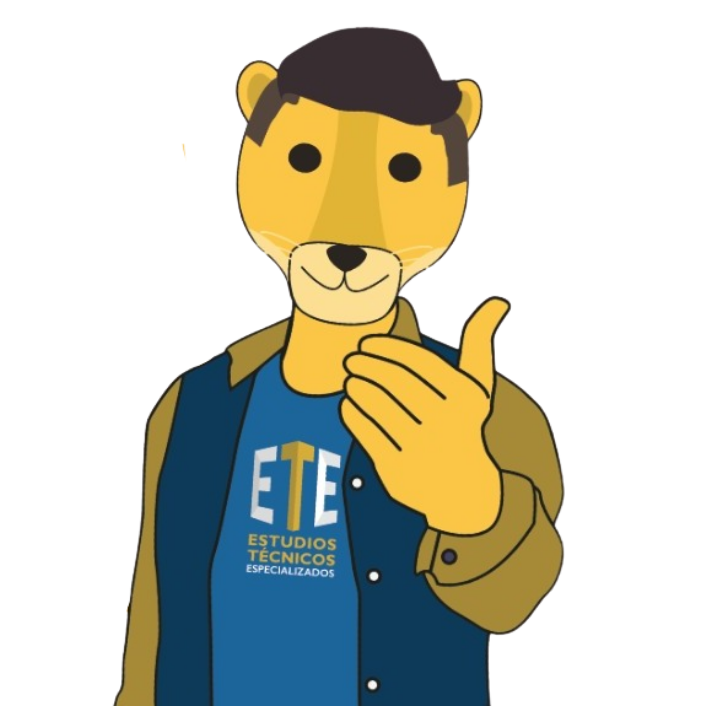

SAETEC
SAETEC
ACERCA DE
SAETEC

SAETEC (Sociedad de Apoyo de el Estudio Técnico Especializado en Computación).
Es una plataforma que permite a los usuarios (maestros, estudiantes o administradores) llevar un seguimiento periódico en torno al logro de objetivos en el Estudio Técnico en Computación.